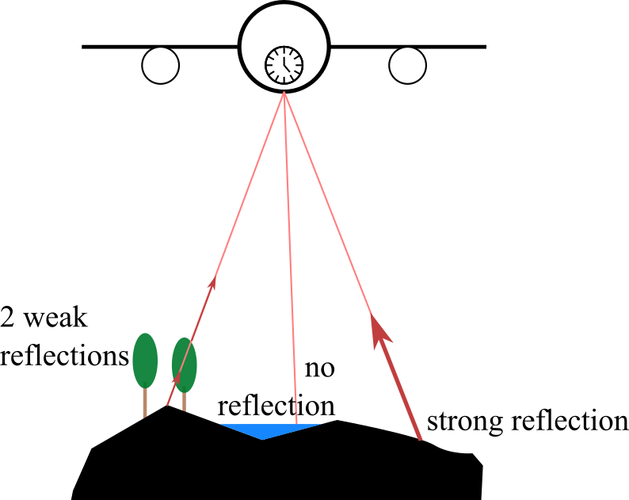
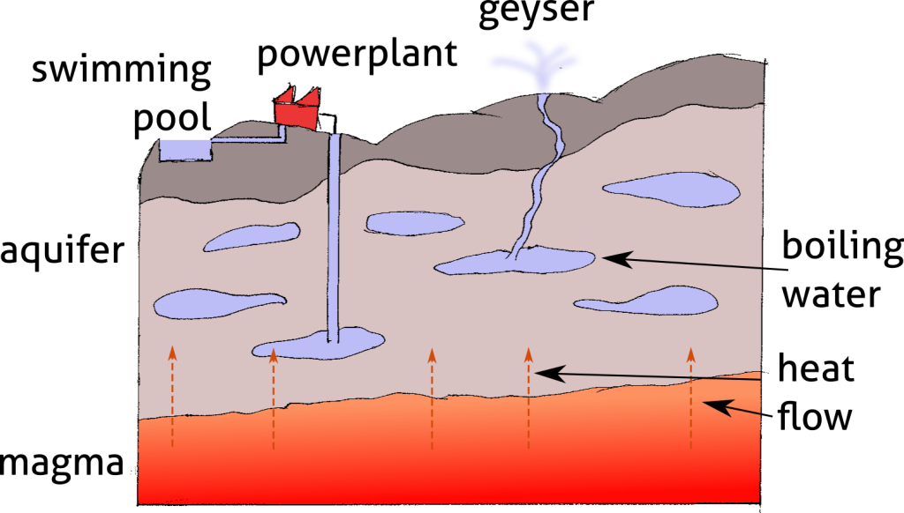

<?xml version="1.0" encoding="UTF-8"?><rss version="2.0"
	xmlns:content="http://purl.org/rss/1.0/modules/content/"
	xmlns:wfw="http://wellformedweb.org/CommentAPI/"
	xmlns:dc="http://purl.org/dc/elements/1.1/"
	xmlns:atom="http://www.w3.org/2005/Atom"
	xmlns:sy="http://purl.org/rss/1.0/modules/syndication/"
	xmlns:slash="http://purl.org/rss/1.0/modules/slash/"
	>

<channel>
	<title>Graphic design &#8211; Julian Podgórski</title>
	<atom:link href="" rel="self" type="application/rss+xml" />
	<link>../../../../../mojastrona/index.html</link>
	<description>I am a geoscientist and GIS specialist, on the hunt for a remote job</description>
	<lastBuildDate>Fri, 26 Jul 2024 14:38:25 +0000</lastBuildDate>
	<language>en-GB</language>
	<sy:updatePeriod>
	hourly	</sy:updatePeriod>
	<sy:updateFrequency>
	1	</sy:updateFrequency>
	<generator>https://wordpress.org/?v=6.6.1</generator>
	<item>
		<title>Science communication</title>
		<link>../../../science-communication/index.html</link>
		
		<dc:creator><![CDATA[jpodgo]]></dc:creator>
		<pubDate>Mon, 22 Apr 2024 09:39:39 +0000</pubDate>
				<category><![CDATA[All]]></category>
		<category><![CDATA[Graphic design]]></category>
		<guid isPermaLink="false">../../../../index.html?p=124</guid>

					<description><![CDATA[During my time at the Institute of Geophysics I have been engaged in a variety of science communication projects. Among my responsibilities was the design and delivery of webinars directed at school children and the general public. The webinars covered topics of geophysics, technical aspects of remote sensing and cultural matters of the Arctic. Some<div class="read-more-wrapper"><a class="read-more" href="../../../science-communication/index.html" title="Read More"> <span class="button ">Read More</span></a></div>]]></description>
										<content:encoded><![CDATA[
<p class="has-medium-font-size">During my time at the Institute of Geophysics I have been engaged in a variety of science communication projects. Among my responsibilities was the design and delivery of webinars directed at school children and the general public. The webinars covered topics of geophysics, technical aspects of remote sensing and cultural matters of the Arctic. Some of them required custom graphical elements such as diagrams and maps, which I have been drawing for the purpose. These works are collected here. I was using Inkscape to create the digital forms of the works, but some of them are based on my pencil-on-paper drawings.</p>


<div class="wp-block-columns is-layout-flex wp-container-core-columns-is-layout-1 wp-block-columns-is-layout-flex">
<div class="wp-block-column is-layout-flow wp-block-column-is-layout-flow">
<figure class="wp-block-image size-full"><figcaption class="wp-element-caption">Schematic drawing showing basic workings and mathematics of airborne LiDAR scanning</figcaption></figure>
</div>


<div class="wp-block-column is-layout-flow wp-block-column-is-layout-flow">
<figure class="wp-block-image size-full"><figcaption class="wp-element-caption">Schematic drawing showing the principle of signal reflection in airborne laser scanning</figcaption></figure>
</div>
</div>


<div class="wp-block-columns is-layout-flex wp-container-core-columns-is-layout-2 wp-block-columns-is-layout-flex">
<div class="wp-block-column is-layout-flow wp-block-column-is-layout-flow">
<figure class="wp-block-image size-large"><figcaption class="wp-element-caption">Schematic drawing showing the glacial erosion leading to the development of a fjord.</figcaption></figure>
</div>


<div class="wp-block-column is-layout-flow wp-block-column-is-layout-flow">
<figure class="wp-block-image size-large"><figcaption class="wp-element-caption">Schematic drawing showing the hydrological and sedimentological process which leads to formation of sandur at the front of a glacier</figcaption></figure>
</div>
</div>


<div class="wp-block-columns is-layout-flex wp-container-core-columns-is-layout-3 wp-block-columns-is-layout-flex">
<div class="wp-block-column is-layout-flow wp-block-column-is-layout-flow">
<figure class="wp-block-image size-large"><figcaption class="wp-element-caption">Schematic drawing of the seafloor spreading in the rift zone with Iceland as the example</figcaption></figure>
</div>


<div class="wp-block-column is-layout-flow wp-block-column-is-layout-flow">
<figure class="wp-block-image size-large"><figcaption class="wp-element-caption">Schematic drawing which outlines the transfer of heat through the crust which makes hydrothermal power and geysers possible.</figcaption></figure>
</div>
</div>
]]></content:encoded>
					
		
		
			</item>
		<item>
		<title>Detection of glacier outlines on LANDSAT images</title>
		<link>../../../detection-of-glacier-outlines-on-landsat-images/index.html</link>
		
		<dc:creator><![CDATA[jpodgo]]></dc:creator>
		<pubDate>Thu, 11 Apr 2024 11:07:44 +0000</pubDate>
				<category><![CDATA[All]]></category>
		<category><![CDATA[Graphic design]]></category>
		<guid isPermaLink="false">../../../../index.html?p=30</guid>

					<description><![CDATA[A poster summarizing the methods and findings of the Master of Science thesis I have defended in the Department of Geography and Regional Studies of the University of Warsaw. The poster contains graphs created for the purpose of the thesis and text in Polish. I have attempted to present the study as a logical succession<div class="read-more-wrapper"><a class="read-more" href="../../../detection-of-glacier-outlines-on-landsat-images/index.html" title="Read More"> <span class="button ">Read More</span></a></div>]]></description>
										<content:encoded><![CDATA[
<p class="has-medium-font-size">A poster summarizing the methods and findings of the Master of Science thesis I have defended in the Department of Geography and Regional Studies of the University of Warsaw. The poster contains graphs created for the purpose of the thesis and text in Polish. I have attempted to present the study as a logical succession of goals, methods and results with a central arch driving the viewer&#8217;s eyes through the boxes in the intended order.</p>


<p class="has-medium-font-size">The Master&#8217;s thesis I have been working on in 2015-2017 was devoted to detection of glacier on LANDSAT imagery. I have taken an approach of iterative testing of image processing parameters and included steps &#8211; such as whether the LANDSAT image should be resampled into a finer resolution or if edge-detection filter was needed. The result has been tested against LiDAR-based maps sourced from the Institute of Geophysics of Polish Academy of Sciences. The test subjects were Arie and Hans glaciers located on Spitsbergen.</p>


<figure class="wp-block-image size-full"></figure>
]]></content:encoded>
					
		
		
			</item>
		<item>
		<title>Evaluation of TanDEM-X DEM for glaciological studies</title>
		<link>../../../evaluation-of-tandem-x-dem-for-glaciological-studies/index.html</link>
		
		<dc:creator><![CDATA[jpodgo]]></dc:creator>
		<pubDate>Thu, 11 Apr 2024 11:07:22 +0000</pubDate>
				<category><![CDATA[All]]></category>
		<category><![CDATA[Graphic design]]></category>
		<guid isPermaLink="false">../../../../index.html?p=35</guid>

					<description><![CDATA[The poster is a summary of a scientific article &#8220;Performance Assessment of TanDEM-X DEM forMountain Glacier Elevation Change Detection&#8221; (the article on the journal&#8217;s website). The poster was created for display during the Living Planet Symposium conference held in Milan, Italy, in 2019. It is a very traditional design, intended to catch attention with striking<div class="read-more-wrapper"><a class="read-more" href="../../../evaluation-of-tandem-x-dem-for-glaciological-studies/index.html" title="Read More"> <span class="button ">Read More</span></a></div>]]></description>
										<content:encoded><![CDATA[
<p class="has-medium-font-size">The poster is a summary of a scientific article &#8220;Performance Assessment of TanDEM-X DEM for<br>Mountain Glacier Elevation Change Detection&#8221; (<a href="https://www.mdpi.com/2072-4292/11/2/187">the article on the journal&#8217;s website</a>). The poster was created for display during the Living Planet Symposium conference held in Milan, Italy, in 2019. It is a very traditional design, intended to catch attention with striking colors and images and explain the results of the study in a comprehensive manner.</p>


<div class="wp-block-image">
<figure class="aligncenter size-large"></figure></div>]]></content:encoded>
					
		
		
			</item>
	</channel>
</rss>
